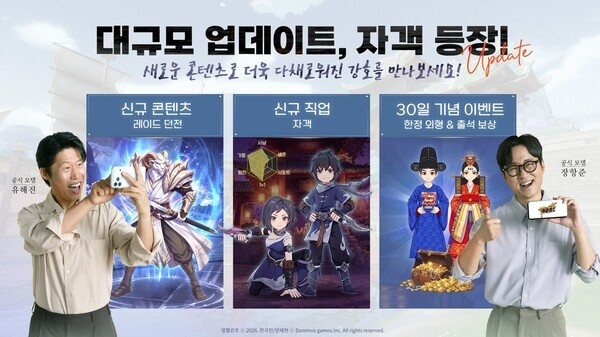
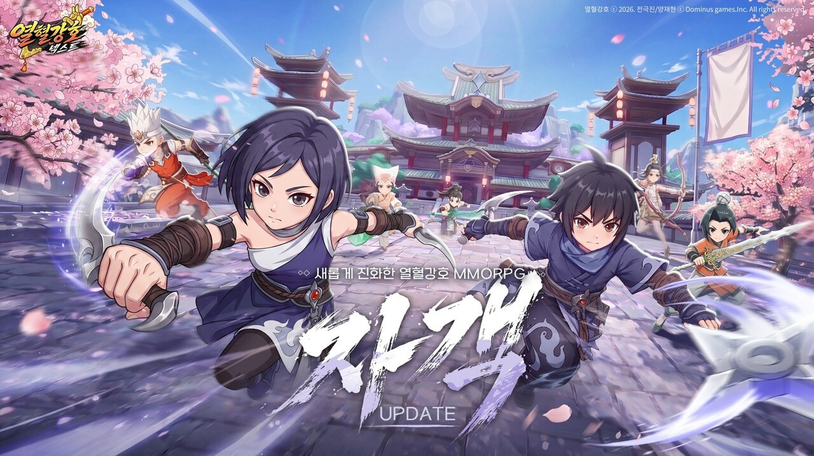

열혈강호 넥스트 업데이트 자객 정보, 매출 순위 오른 이유까지
요 며칠 스토어 순위표 구경하다 보면 열혈강호: 넥스트 이름이 자꾸 눈에 띄시죠. 킹넷이 서비스하는 이 무협 MMORPG는 지난 7월 29일 오전 10시에 정식 출시했는데, 원작 만화 감성을 카툰 렌더링 그래픽으로 살린 무협 액션이 특징인데요. 원작 만화 '열혈강호'는 전극진 작가와 양재현 작가가 1994년부터 연재해온, 국내에서도 손꼽히는 장수 연재작으로 알려져 있어요. 모바일뿐 아니라 PC 클라이언트로도 즐길 수 있는 크로스플레이를 지원한다고 하니, 데스크톱에서 편하게 즐기고 싶은 분들도 참고하시면 좋을 것 같아요. 저도 순위표 보다가 '어, 얘 요즘 왜 이렇게 잘 나가지' 싶어서 한 번 들여다봤어요.
열혈강호 넥스트 매출 순위, 갑자기 오른 이유가 뭘까
열혈강호 넥스트가 순위표에서 존재감을 키운 건, 출시 초반 기세에 이어 출시 한 달차에 '자객'이라는 신규 직업과 '레이드 던전', '전직 시스템'을 한꺼번에 얹은 업데이트가 크게 작용했다는 분석이에요. 사전예약 때부터 100만 명이 몰리면서 화제성을 챙긴 채로 출시했고, 베타뉴스가 8월 10일에 보도한 바에 따르면 8월 3일부터 9일까지 한 주간 집계에서 구글플레이 매출 순위 6위까지 올라섰거든요. 신작치고는 꽤 빠르게 상위권에 자리 잡은 셈인데, 여기서 멈추지 않고 8월 26일부터 출시 30일을 기념하며 콘텐츠를 크게 얹었더라고요.
새 직업 하나, 파티 콘텐츠 하나, 성장 시스템 하나를 동시에 터뜨린 거라 '한 방'이 아니라 '세 방'을 노린 업데이트였던 셈이죠. 한 게임을 오래 붙잡고 하는 유저 입장에서는 이렇게 여러 축을 한꺼번에 채워주는 업데이트가 나오면 이탈할 이유가 줄어들고, 신규나 복귀 유저 입장에서도 '지금 들어가면 볼 게 많다'는 인상을 주니 순위 방어에는 확실히 유리했을 것 같아요. 다만 이 6위 기록은 8월 26일부터 시작된 30일 기념 업데이트 이전 시점 수치라, 지금 실시간 순위는 스토어에서 직접 확인하시는 게 정확해요.
지금 순위는 시시각각 바뀌니까 직접 찍어두는 게 제일 정확해요.

신규 콘텐츠 레이드 던전, 신규 직업 자객, 30일 기념 이벤트까지 한 번에 묶은 공식 안내 이미지예요.
이미지 출처: 경향게임스 · 네이버 본문엔 받아서 재업로드 권장
새로 추가된 자객 직업, 뭐가 다른가요
자객은 그림자처럼 숨어 있다가 허를 찌르는 데 특화된 근접 딜러 직업이에요. 높은 기동성과 회피 능력으로 적한테 바짝 붙은 다음, 짧은 순간에 화력을 몰아 터뜨리는 방식이라고 하더라고요. 기존 직업들이 정면 승부나 원거리 딜에 강했다면, 자객은 숨어 있다가 결정적인 순간에 허를 찌르는 쪽에 가깝다고 보시면 될 것 같아요. 이름값답게 화려한 이펙트보다는 순간 판단력이 중요한 조작감일 것 같은데, 이 부분은 직접 굴려봐야 확실히 체감이 될 것 같네요.

'새롭게 진화한 열혈강호 MMORPG, 자객' — 공식 업데이트 키비주얼이에요.
이미지 출처: 게임톡 · 네이버 본문엔 받아서 재업로드 권장
레이드 던전은 어떻게 참여하나요
레이드 던전은 5~8명이 파티를 꾸려서 단계별 난이도의 보스를 공략하는 콘텐츠예요. 정리하면 이런 구조예요.
- 참여 인원 — 최소 5명, 최대 8명까지 파티 구성
- 공략 방식 — 단계별로 난이도가 나뉜 보스를 순서대로 도전
- 보상 — 보스 처치, 퍼스트 킬 등 성과에 따라 다양한 보상 지급
- 종료 후 — 획득한 아이템은 경매를 통해 분배
혼자 하는 콘텐츠가 아니라 파티가 기본이다 보니 길드나 친한 유저들끼리 미리 시간 맞춰두는 게 좋을 것 같고, 경매 방식이라 아이템 욕심만큼 눈치 싸움도 좀 붙을 것 같더라고요.
파티원들이랑 다 같이 보스 잡는 맛이 레이드의 핵심이죠.
전직 시스템은 또 무슨 소리예요
전직 시스템은 지금 키우고 있는 캐릭터를 다른 직업으로 바꿀 수 있게 해주는 기능이에요. 참고로 열혈강호 넥스트에는 원래 도무사(탱커)·창무사(근접 폭딜)·검무사(연속공격·회피)·궁무사(원거리 딜)·의원(회복·서포터), 이렇게 5개 직업이 있었다고 하더라고요. 전직 시스템이 생기면서 이 다섯 직업이랑 새로 추가된 자객 사이를 오갈 수 있게 된 걸로 보여요. 이번 업데이트로 자객, 레이드 던전이랑 같이 들어왔는데, 정확히 어떤 조건에서 바뀌고 스킬이나 성장치가 어떻게 이어지는지 같은 세부 메커니즘은 두 매체 보도 모두 자세히 다루지 않았더라고요. '캐릭터 성장과 플레이 방식의 선택지를 넓혀준다' 정도로만 알려져 있어서, 정확한 조건은🔍 게임 내 확인이 필요한 부분이에요. 그래도 한 캐릭터에 시간을 많이 투자한 유저 입장에서는, 마음에 안 드는 직업 때문에 처음부터 다시 키우지 않아도 된다는 것만으로도 반가운 소식이지 않을까 싶어요.
8월 26일부터 열린 30일 기념 이벤트는 뭐가 있었나요
8월 26일부터 9월 2일까지 진행된 출시 30일 기념 이벤트에서는 접속·충전 보상부터 전 서버 이벤트까지 여러 가지가 한꺼번에 열렸어요.
| 이벤트명 | 내용 |
|---|---|
| 30일 기념 기금 | 매일 접속 시 출석 보상과 함께 전용 외형(코스튬) 지급 |
| 출석 보상 | 프로필, 말풍선, +13 강화부 등 다양한 접속 보상 순차 지급 |
| 30일 기념 재물운 | 충전액에 따라 코인 적립 |
| 30일 기념 축복 | 하루 충전 1위 유저에게 특별 변신 효과 지급 |
| 몬스터 퇴치 | 고릴라 보스 처치 이벤트 |
| 교환 장터 | 희귀 아이템 교환 |
| 30일 기념 연회 | 전 서버 대상 불꽃놀이 이벤트 |
이 업데이트, 전 서버가 한날한시에 열린 건 아니고 각 서버 오픈 일정에 맞춰서 순차로 적용됐다고 하니 서버마다 콘텐츠 열리는 시점이 살짝 다를 수 있다는 점은 참고하시면 좋을 것 같아요.
자주 묻는 질문
Q. 열혈강호 넥스트 사전예약 성적은 어땠나요?
사전예약자가 100만 명을 넘겼고, 이 화제성을 그대로 이어서 7월 29일 오전 10시에 정식 출시했어요.
열혈강호 넥스트 정리
정리하면, 열혈강호 넥스트는 사전예약 100만 명으로 시작해서 출시 2주 만에 매출 순위 6위까지 올라섰고, 출시 한 달차에 자객·레이드 던전·전직 시스템을 한꺼번에 얹은 업데이트로 그 기세를 이어가려는 모양새예요. 신규 직업 하나만으로 끝난 게 아니라 파티 콘텐츠와 성장 시스템까지 같이 들어온 거라, 요즘 무협 MMORPG 찾으시는 분들이라면 한 번쯤 들여다볼 만한 타이밍인 것 같아요.
✔ 열혈강호 넥스트 같이 보기 좋은 내용
(예전에 다룬 열혈강호 넥스트 글이 있으면 여기로 이어줄 자리인데, 이번 글에서는 정확한 post ID를 확인 못 해서 링크는 발행하실 때 직접 연결해 주세요.)